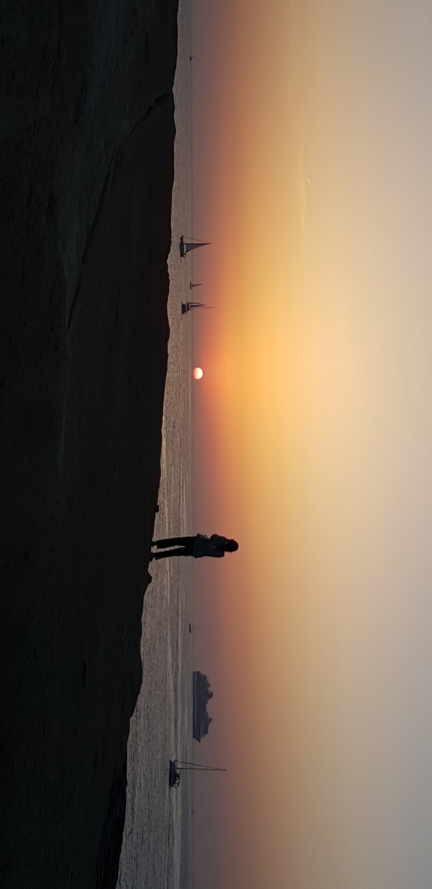
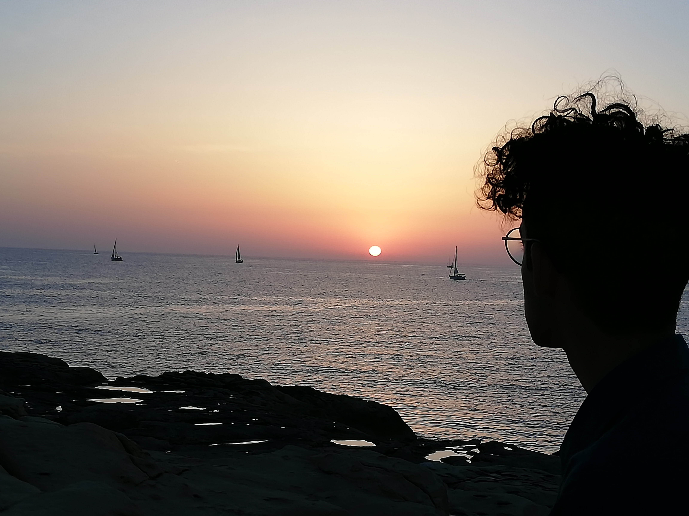
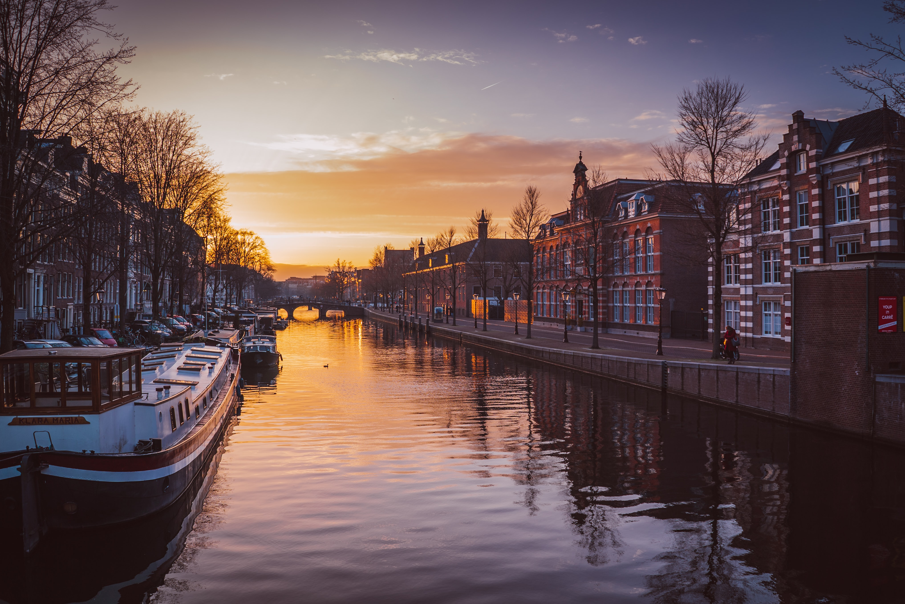
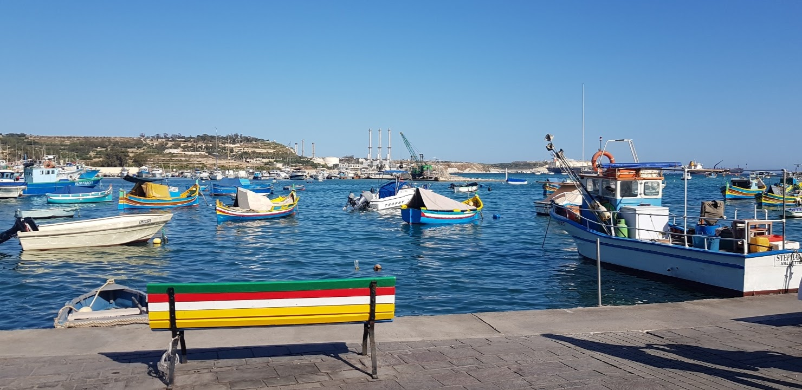
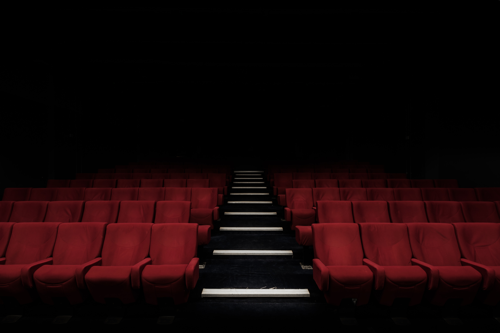
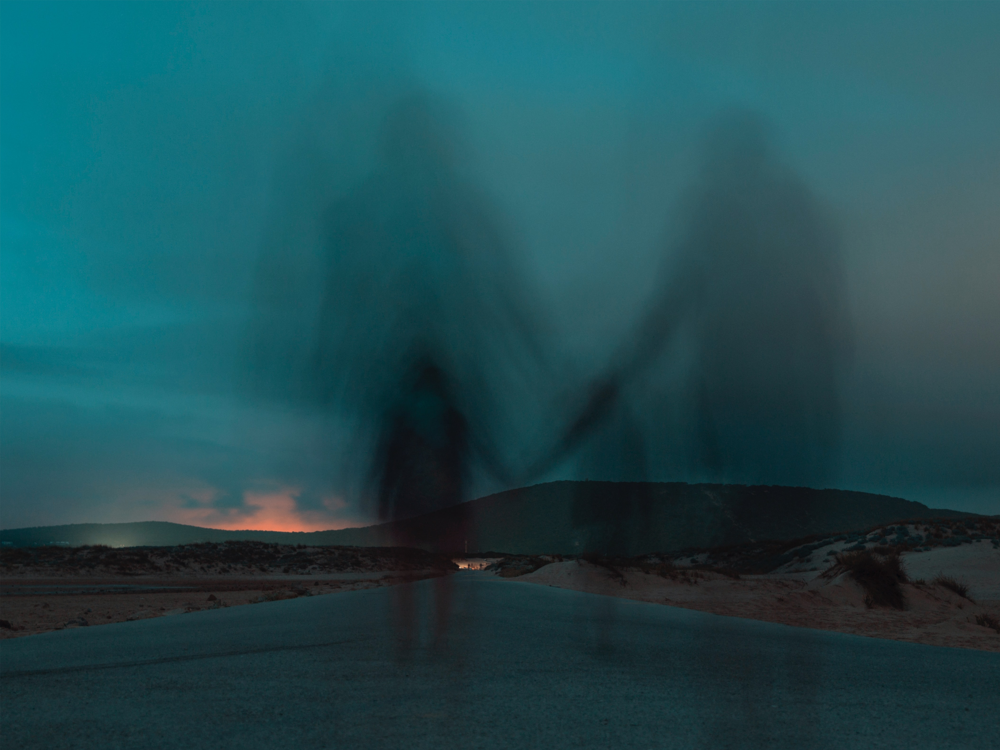

Introduction
Hello, I am 20 years old and I am currently studying maths and computer science at UCA. At the same time I work at the university restaurant every day at noon ( I wash the dishes).
Educational background
I passed a scientific Baccalauréat, then I did a year of preparatory class for the “grandes écoles” ( in maths, physics and engineering science).
This year went wrong for many personal reasons that’s why I went to college but I still got the same purpose to enter an engineering school in computer science.
Professional project
My Plan A is to become a computer engineer and to travel a lot thanks to my job.
Leisure activities
I really like drama classes and theatre in general. That’s my plan B would be to become an actor (in theatre). I also enjoy painting but only as leisure because I am pretty bad at it, however, I love doing.
Otherwise, I love partying with my friends but also meeting new people, learning languages, travelling, reading, video games, etc.
That’s actually why I work during the year, it’s in order to afford trips and to party. (I am actually going to a festival in Dusseldorf in Germany the next weekend.)
My relationship with English
I think that my english level is at least around B2 for all types of evaluation (speaking, writing, understanding).I really like this language, given that it’s everywhere around me. I have many British and foreign friends so I’ve always been exposed to English. And obviously that’s also because I love American and British Tv shows. (Some examples: Game of Thrones, Mr. Robot , Heroes, Shameless, Doctor who and many others)
My weaknesses in English:
I feel like my English level decreases through the years because I study it less, and speak it less with my friends.
My writing is getting worse and worse since I don’t have to write essays anymore.
My strengths:
I think my oral comprehension is quite okay, and that I know many idiomatic expressions.
My needs and my objectives in English:
Speaking English more often in order not to have to think about some phrases before saying them (and specific words too).
I also would like to fully read a book written in English, and watch all the TV shows and movies without subtitles.
My plans to learn english outside the class:
My plans are to speak all the time in english with my native English friends, to watch Netflix without the subtitles and going to the Verlaine as many times as I can. Every Tuesday many English speakers go to this bar, to drink a beer.

Week 1 : My Summer
This summer was really amazing even though I thought it would be boring to work, during July and August in Clermont-Ferrand, without my homies in the city.
Malta:
However, I really loved June because I spent it with friends and went to Malta with three of them. The Islands of the country were amazing, we had the chance
to swim at beautiful beaches where the water was crystal clear. We also partied a lot and given that the drinks were cheap: it was fun. What’s more, we visited many cities of
the island such as La Valette which is the capital of the country, Mdina where many scenes of Game of Thrones were shot (especially in season 1), San Giljan which is full of bars and nightclubs,
Tas-Sliema where we had our rooms, etc. The country has a lot of very ancient buildings and there were bulwarks around the cities as if they were big castles. This trip was incredible because every view was terrific especially the ones close to watering places.
I remember that I was really tired the first day so I slept a lot when we arrived at the hostel located in Mdina. However, I woke up at 4 am, before all my friends, and went nearby the sea to enjoy the sunrise. Here's a picture of the sunrise, that I took.
The whole week was amazing, we kept laughing and having fun. And we met kind people who were really interesting and who taught us many things about the island such as the fact that it is really religious and has a lot of old famous places (for instance Calypso's cave is located in the south of the main island,
we actually felt like visiting it but it was too far away and too expensive: we did not want to waste a whole afternoon only to visit one place. We prefered to choose paths in which there were at least 2 or 3 places to visit each day.)
Summer job:
The rest of Summer turned out to be amazing too I worked at Flunch (famous in France, it’s like bad food but in plates so it doesn’t look like junk food). The job was lame and tiring but the people were amazing, I made great friends there and we spent the whole summer partying after work. Those are good friends because I keep seeing them even though the summer job is over. And we keep having fun.
Nevertheless, the job taught me how to manually work quickly and efficiently in stressful situations. I also learnt how to use many kitchen tools and the basis of catering services.
One of the fun facts of this job is about the person who trained me during the first weeks. As a matter of fact, this person has been diagnosed with bipolar disorder and has been on medication since then. According to the boss, during the first week, I only had to watch how to do the job and I would start the week after. However, as soon as I entered the kitchen (for cold dishes), she told me to do so many things that I had no idea how to deal with. I had to peel 6 kilos of carrots as quick as possible and run across the whole building every time. At one moment she asked me to do 4 things at once: a chocolate cream, a Panna Cotta, a tiramisu and cleaning the ground and the fridge. Just after asking me those tasks, she left, I was completely lost I did not even know where was each ingredient and I could not get all the recipes because the tab (kitchen computer) crashed. That’s why I could only start to make the chocolate cream, and suddenly after 4 minutes (I had to pay great attention to time) she burst through the door and started shouting on me “DEPECHE TOI, MOI j’aurais déjà fini (et cetera)”. It was my first day, and I had to backtalk her, even though I wanted to keep my job. To which, she instantly acknowledged her guilt.
At that moment, I did not know that she had a mental disorder. The following days matched the first one. Once she virulently blamed me for our delay for 2 hours. When we were done she told me that we are gonna help the other workers because we were really early, to which I said, “Why the F. have you been blaming me this whole time?” to which she calmly responded, “ because I wanted to put pressure on you.”
Nevertheless, this insane old lady told to the bosses that I was doing my job properly, even though she was confused that I was calm “but” efficient because she can not work like that.
I could write my whole portfolio about the crazy stories of my catering jobs, that’s why I"m letting you some teasers: one of the workers asked the boss for underwear, another, that was dealing with the cash register during a rush, left and went to the toilet and had a nap, one of them went to prison because of kidnapping and sequestration. The funniest thing in all of this is that those who looked the most serious were the ones who had issues doing their jobs properly whereas the ones smoking pot during the breaks were the most efficient.

Weeks 2,3:
WEEK 2:
So this is week 2, This week is a bit tiring because I have to do many things (not talking about school or work: more like administrative things), and there will be La Fête de La Chouffe on Thursday, and then I’ll go to a Festival in Dusseldorf in Germany on Friday morning. I’ll first go to see friends in Paris and then take a bus to Dusseldorf to enjoy 13 hours of Festival. And I will come back on Monday morning for class.
Personality Test:
I pretty much agree with the introduction, I love having new ideas to how to solve things, and I may miss things because it looks like hard work even though I am really ambitious.
And I really love debates too, as a matter of fact, my dinner discussions are full of debates.
Nevertheless, I really disagree with the not sensitive part and the intolerant part too. However indeed I find it difficult to focus, I really like to multitasking that’s why it is pretty hard for me to focus on only one task. What’s more, even though I know that multitasking is bad for your brain health (I studied an article, in preparatory class that tells that you can lose IQ points because of it, and you become less empathic) however I keep doing it.
WEEK 3:
Given that the homework for this week is about Jobs and CVs. I am going to rewrite my Cv because I would like to apply to other jobs. I do not want to work at the R.U. anymore. However, I will keep working there until I find a better one. I actually applied to work, eight hours every Saturday, in a tobacco shop in the North of Clermont-Ferrand.
That week I went to Paris to see Highschool friends: we did a party for my friends’ new house. (In french we actually call that “Pendaison de crémaillère”, because people use to set up their “crémaillère” last: and that meant that they were done moving in.) This weekend was really cool because I had the chance to see my old friends and we had the chance to talk a bit about our new everyday life.

WEEKS 4,5,6
WEEK 4:
This week I was invited to join an amateur theatre troupe, and I’m fully down for it. What’s more, I went to Bordeaux during the weekend to celebrate a birthday for the whole weekend.
And I also visited a bit of the city, I really think that the city is awesome I would love spending some time studying there. It is way bigger and more active than I thought. I visited a spot called Darwin, it was super cool there were many artistic drawings on the walls, many warm bars and a skate park.
And I had the chance to eat some good quality fast food and to sightsee the centre of the city. What is more, I met young people who started really interesting start-ups and this made me want to do it too during my twenties because I wanna experience as much as I can during my life.
WEEK 5:
This week I went to Clermont-Ferrand Fête ses étudiants which was a big game around the whole city, we did not win but we did have much fun though. On Wednesday, I went to the rink with my friends because there was a costume student party, it was super cool too and I met many other friends there.
Otherwise, I spent my weekend in Montluçon a small city in Allier, that is where I am from, it was relaxing and I was able to see my family and eat some of my mum dishes.
This week I plan to study harder because I have several tests (in algebra and in computer science). And I also want to go to thrift shops with my friends, especially to a new one called L’affinerie.
What’s more this Thursday there is a Barathon to which I want to participate, but only if I am done with all my work first.
I also plan to go to Montpelier next weekend to see some friends! :D
WEEK 6:
This week, I studied a lot because I had other big exams in math and computer science. So I had to study a lot and make resume sheets.
This week I would like to answer to one of your question that is: Are you a cat person? A dog person? why?
Well, I consider myself as a cat person because I think that cats are mesmerising because their walk is like dance, they act like panthers. However, I do not really know if today I would prefer to have a cat or dog because I also like dogs very much. And dogs seem way more loyal and caring than cats.
I used to own a cat that I really loved that is why I think I am a cat person, we used to be very close ( R.I.P. Cariño). And I felt like it was a really smart cat, but that’s probably what every person close to his animals think about them.
The other perk of having a cat compared to a dog is that you don’t need to go for a walk many times a day so that the animal can pee and poo.

WEEKS 7,8,9
WEEK 7:
I am running out of ideas so I am going to answer another question of yours that is: “Do you think that travelling is an important part of your “education” in life? Why or why not?”
In french, we are used to saying “Les voyages forment la jeunesse.”, which means that travelling during your youth teaches you a lot, while you are growing up. And all those experiences are going to help you when you are an adult because you will know how to overcome new hardships thanks to what you learnt from those experiences.(And I know that there is an equivalent to it in English that is “Travel broadens the mind”.)
I am really into travelling and I am trying to travel as much as I can during my studies because I think it is a good time for that because we do not have that much responsibilities (kids, jobs, etc). And I also think that it helps me to see the world in a different way, a more practical way and this is something that we need in our education to be a better person and to evaluate things as they are instead of as they are told to us.
WEEK 8:
Recently, I was called for the application that I sent to work in a tobacco store. So, I went to the tobacco store on a Thursday and met the boss. He was cool and the meeting went really well and we talked a lot.
However the tobacco shop is pretty far away from my home, but given that I will work only on Saturdays I do not mind taking public transports for a long time if it is only twice a week.
This would help me to earn more money to travel more. However, I could not really travel during the weekends but only on Holidays.
I had the idea at the beginning of the semester to make my portfolio with HTML, I think I am going to do it during the second semester though. (It took longer than I thought)
WEEK 9:
This week, I would like to answer another question of yours: “Do you think humans are inherently evil or inherently good?”
I absolutely don’t think that we are inherently good or evil because we have seen that people can change and turn evil because of dreadful hardships. What is more, we all know that we do some good and some bad without really realising it at the moment. So even though we would try to be good we are sometimes wrong therefore bad. Nevertheless, that is sure that some people do not try to be good, or even do not mind being mean but I think that is rare, and that those people have psychotic problems. (That probably come from their life experiences)
By the way, I did not get the job but I am going to keep applying until I find a new one. I think that I did not get it because I already have one and the boss probably thought that I could not handle both.
WEEKS 10
Here are three typical questions that you asked us to write:
What are the strong qualities of yours?
First of all, I would like to say that I consider myself to be a good team worker, who indeed works well with other people given that I am used to having school projects with my classmates such as games and coding exercises. What is more, I have been doing theatre since I was a child, so I do not mind public speeches. I am also a hard-working person; I have always been keen to learn more about computer science that is why I used to work between classes and during the holidays to afford my computer equipment.
What are the weak points that you have?
First of all, I think that I have trouble asking for help because when a task is given to me I really want to fulfil it by myself. And I would try harder and harder until I manage to fulfil it, that’s also why I think that I am a hard-working person. However, I don’t think it impacts my team working because when I work with people it is more of sharing than asking people to do my job.
Why would you like to work for our company?
I really want to work at G-Search because I am extremely enthusiastic about G-Search ‘s focus on solving the world’s financial problems and would welcome the opportunity to contribute to your ongoing success. I hope that I will improve my skills as the company grows until it becomes one of the biggest in the world.
My three atypical questions are:
Do you use a pen or a pencil on a daily basis?
I would ask that question to know if the applicant is someone with a strong personality, and how confident he\she is but also if the person is someone who questions him/herself. It is also to know if the person is someone who likes to perfect his/her work. The justification for the answer is really important because there is no good answer.
Do you like spicy food? If not how many times have you tried it?
Thanks to this question, I want to know if the applicant is a risk-taker. And how much the person would tend to retry something that is hard for him/her? And also If the person is someone really curious or not
Another question is Do you prefer to use books or educational videos to learn about a new subject?
Through this question, I am trying to know if the person prefers typical learning methods or likes to combine education with fun.
WEEK 11
I went to Montpelier to see a friend, and I went to a festival called I LOVE TECHNO. I had much fun, and I was asked a common question “What is happiness?”. So I would like to try to answer here:
First, we have to define pleasure, which is a strong instant of joy that leaves you quickly. I think that it depends on people and that everyone has to make his/her own happiness by choosing between pleasures and satisfaction of what he/she already owns. However, I think that we can not be really happy if we think that pleasure is happiness because we would always want more and more. And somehow if we are really seeking for happiness, we can’t really reach it because our research would be driven by self-interest. I feel like you can really be aware of happiness when the long moment is done, because if you realise that you are happy either you become instantly less happy or it is just a pleasure. Happiness lasts long otherwise it is not. (this is just my opinion)
However in a potential future, we will probably be able to control the chemical processes that happen in our brain, and therefore be artificially happy. And we won’t have to ask ourselves that question. (There’s probably a Black Mirror episode about that)
Now, I would like to answer to one of your questions that is “ What characteristics do you think distinguish the different french regions? Do you find differences between Auvergnats and other regions?”
I think that the first thing that distinguishes the different french regions is the accent: because the accent is really specific and you can guess pretty quickly from which region the person comes from, sometimes even the city. What is more the vocabulary for ordinary things can be completely different. For example, a plastic bag is called “une poche” in the South. And a pencil is different depending on the region (you can fin the map on my portofolio made with your template
And it is the same for the well -known pain au chocolat.
The second thing that distinguishes the different french region is the food, people in the south tend to eat more like Mediterranean people, and the ones in the North eat less spicy food.
Auvergnats have a regular accent, as the one talked in Paris or the main part of France, however, we have some particularities in our talking such as the fact that we use a lot the word “y” even though the sentence is incorrect, bad french. For example, some Auvergnats would say “J’y fais” instead of “je le fais”( which means ‘I am doing it’), or also “prends y” instead of “prends le/la” (which means ‘take it’).

Week 12, Christmas
Today, I would like to talk about movies that I recently watched. The first one is called Gerald’s Game it is based on a Stephen King’s novel. I really liked the movie because almost all of it was happening in a single room because the main character, called Jessie, is cuffed in it. During the whole movie, she is trying her best to escape the room. I really liked it because it felt like it was not boring and too long because the scenes were catchy. And there was enough action not to be boring but not too much to be “tiré par Les Cheveux” which means that it is not relatable to reality.
The French name of the movie is actually “Jessie”, I think it is because “le jeu de Géralde” would be too “pourri” as you would say. And given that Jessie is the main character, her name turns out to be more consistent.
Another movie, based on a Stephen King Novel, that I have watched is “In the tall grass”. However, I did not really like it, because it was too confusing and not many things were explained.
What’s more time and dimension were involved, so it was even more complicated to understand. Even though I guess that many strong ideas were implied, I didn't really get it so I could not really appreciate it. Moreover many things were incoherent, and the incoherence was never explained.
I have also recently watched 1922 (also base on a Stephen King novel: yes I was feeling like watching Stephen King’s stories). This one was way more realistic but less catchy. Nonetheless, even if the story was pretty simple, the scenes were not boring and the evolution of the characters was interesting and consistent.
In conclusion, among the three movies, I think I prefered “Gerald’s Game” because the scenes were really catchy, and the story was very unexpected. The whole movie was pleasant to watch even though there were some gore scenes.
Christmas:
I actually do not celebrate Christmas, however, I did enjoy these holidays. I was able to see my friends, my family and also have some rest. Even though, I had also to study for January exams.

Scientific question
For next week, we have to think about questions for our oral presentation. I think that I would like to talk either about how harmful are some technological devices we daily use or about sleep especially REM Sleep and unconscious behaviour such as Freudian slip, “actes manqués”, dreams…
For now, my questions are :
Given that we are the first generation to live our whole life with cell phones, do we really know if cell phones are really harmful to our health (cancers)?
How much do we really know about REM sleep? Is REM sleep an indicator of our mental health (depression, stress, happiness...)?
These questions are obviously too vague that’s why I wrote the new ones on the folder for scientific questions.
Finally, the question was: To what extent can lack of Rem Sleep be connected to increased risk of dementia?
I was really glad to work on that subject that’s why I spent a lot of time reading articles and researches. What’s more, it taught me a lot about our sleep and how valuable a good sleep hygiene is.
Supernatural questions part 1
For this week, I will answer the supernatural questions:
Do you believe in aliens? Why or why not?
No, I do not because I have not experienced anything like that. Nevertheless, I do not deny the existence of another life far away from Earth. However, I don’t think that we picture it the right way. I really doubt that aliens are green and humanoid.
Have you ever seen a UFO? Do you believe people who report seeing one? Why or why not?
No, I have not. I wish I have. No, I don’t because their stories are so unrealistic and if it was true we probably would have proved their existence a while ago. What’s more the footage, they got from their experience is always bad quality as if they still have a camera from the 80s.
Do you believe in paranormal activity? Why or why not?
No, I don’t believe in that. First, because I have not experienced anything like that and even if I have, I can’t even be sure that it was supernatural. Secondly, it is way easier to live like that. And I think that people who believe in that kind of things believe it because they want too. Lying to oneself can be mentally easier or appealing sometimes.
Do you believe in ghosts? Why or why not?
No, I do not because I have never seen a ghost in myself. And few people have obviously otherwise we would have real proof that they exist, not only witness.
What is the scariest thing that has ever happened to you?
It was a winter night, I went back home during the weekend even though my mom was not there because she was in Algeria for a month or two. So I was all alone, I called my brother the Friday night to tell him that I was in Montluçon and that we should meet tomorrow or on Sunday. We talked a bit until the moment he asked me if I would feel comfortable sleeping alone at home. To what, I responded “Sure, why wouldn’t I?”. Then he told me that our apartment creeped him out. I didn't really get why because it seemed pretty normal to me. ( It’s modern but a bit close to the countryside, so at night there’s no light and cars but the sound of frogs).
Then I made food and watched the first season of Stranger Things till around 1 am, then I went to take a shower. And you know that people say that we should not take a shower at night, because of the bad spirits and stuff. In spite of all the omens, I was in the bathtub, showering (shampoo in my hair). When suddenly I heard much noise, then a “bam” as if someone bumped into a furniture. At first, I thought it was my neighbours, so I shut the water down, in order to be able to listen clearly. And that’s when I heard heavy footsteps in my corridor. The door of the bathroom was slightly open, I was petrified. Holding the head shower with one hand and the tap with the other. I stayed like this during a while, till I acted exactly like a dummy from a horror movie. Holding my towel, I went through every room to find any fallen object that could have made that “Bam”. Nothing found. And my almost all my neighbours were not here, the only ones there were probably already sleeping because there was only silence. That’s I chose to lock myself up in my room until the morning.
(I could have told my first sleep paralysis here, but I’d rather grant importance to it that’s why you will find it much below.)
MSupernatural questions part 2
What is the strangest thing that has ever happened to you?
It actually happened in Amsterdam. I was with three of my oldest friends, we were in the train station at night. We were about to take the subway when the station started to shake and make a lot of noise. Everyone who was in the station started to run in the same direction and make weird looks. We thought that there were an attack or something like that. It was like the beginning of an apocalyptic movie.
Do you believe that aliens abducted Travis Walton? Why or why not?
<
No, because I don’t believe in alien. Maybe this guy just took too many magic mushrooms and since then he has not been able to make out reality from fantasy.
Would you like to visit a haunted house? Why or why not?
<
Yes, but obviously not alone. I would like to do it with friends because the adrenaline would make the party more fun with our phone fully charged because we better be safe than sorry. I mean we all have watched The Exorcist and it taught us that Prevention is better than cure in those cases.
Do you believe the story of Annabelle the doll? Why or why not?
No, for the same reason than the question about ghosts. What’s more, my ex-girlfriend and I watched the movie together and we both thought that it was not scary at all. It’s really overrated. We chilled though.
What is the scariest thing you have ever heard?
When I was young, I was told about the story of the “Dame Blanche” that comes at 1 a.m. every night if you call her in front of a mirror. You need to repeat her name 3 times and she is supposed to come to kill you. Some people say that you can meet her if you drive a deserted road near the mountains, at night. It is said that she wears her wedding dress hence her name, and how easy it is to recognize her.
If people are making up stories about ghosts and aliens, why do you think they do this?
To be honest, I think most of them don’t lie they are just wrong. And they unconsciously want to believe it because it is easier and more pleasant in life.
Would you like to be abducted by aliens? Why or why not?
No, because I don’t want to be on an operating table and to be dissected.
Why do think some people care about finding out if aliens exist?
I think that some people want to know if there is life somewhere else than on earth for technology advances. And others that are just fascinated by them.

Court Métrage Festival
This week, I went three times to the Court Métrage. I only went to the international ones, because I wanted to see foreign short movies and how different can be the direction from a country to another. I am going to give my opinion about the séance where I took a picture (on Thursday 11th).
The first movie was about the ghetto in Great Britain, this was not bad but I did not appreciate it that much because I felt like many scenes were really boring because it was as if they were trying too hard to make it artistical. (By the way, the director of this movie was there)
The second one, called Arab Night, was definitely my favourite one, everything occurred in a Tennis Building. This one lasted 35 min but it was so much captivating that time flew. The movie was educational but extremely funny at the same time, with a fine sense of humour. In addition, the shot was interesting and pleasant. The movements were smooth and artistic whereas the things were basic. And the script felt deeper than it seemed.
The third one was a Korean movie without any dialogue, I really liked it because it made me see another type of movie-making. Even though the main characters, who were a little girl kidnapped by a grown man, did not talk; it was really captivating and visually pleasant to watch.
The two other movies did not strike my mind.
The two other movies did not strike my mind.
(As you asked, I added a pic of me at the Court-Métrage. It is really bad so don’t you dare forget my extra point.)
Apollo 13 questions part 1
Should the people at NASA have been deterred by the failure of Apollo 13?
No, they should not because they proved that they were able to solve unexpected problems. What’s more, they have to learn from each failure or problem they encounter.
It only could make them smarter and more able to fix and cope harder hardships.
Would you want to be an astronaut? If so, why? If not, why not? Would the tedium of all the hours of training be worth it?
Louis said, “No, because I need at least 8 hours of sleep per night otherwise I got body ache, and I feel tired.” And Aimen said “Yes, I would want to, however, I would like it to last only a few months. Then I don’t think it’s possible because this job needs a lot of preparation and physical training during the years.”
Do you think it's important to explore space using manned spacecraft?
Yes, it allows people to realise the dreams they have. What about if they do it through the sight of a robot.
(But the other main argument is that with a manned spacecraft, the outcomes are more realistic. And with a human on board, fixing problems and machines is easier. )
With all of the problems in the world such as poverty and disease, should we have spent billions of dollars trying to send someone to the moon? Shouldn't we have spent the money here on Earth to give people better lives?
No, we should have not spent that much money trying to do that but we know that white supremacy doesn’t mind if other people lives are awful.
Astray Louis: Yes we should! That’s not a question of money, in my opinion, it’s a society problem. Come with me to empty the bins of stores, we don’t need to spend more money to fight against poverty, we just need to learn to SHARE!
Describe the historical background behind NASA's program to explore the moon and its importance to the United States in the 1960s. What did this have to do with the Cold War?
To show that they were clever and more powerful than the Russians. They were developing a space war program. They actually won thanks to Apollo 11, when Neil Armstrong walked on the moon.
What does this film tell you about what engineers do?
It tells more what society provokes: it provokes engineers doing bullshit. The same as for cars: they build it as fast as possible, making just something that works more or less, without thinking of what bad could happen, and trying to solve problems they didn’t want to see before making machines work.
Apollo 13 questions part 2
In your opinion, what are the essential strengths of an engineer and a researcher?
According to me, the essential strengths are to be quick thinking and adaptable because they
can not expect exactly how they will need to fix their problems however they will have to fix
them by adapting.
If you had been an engineer at Nasa, how do you think you would have reacted?
I would have been super efficient and would manage to solve the problem the same way they did.
What could be the benefits of lateral thinking for your future career?
This would help me a lot in order to solve problems that seem unsolvable. What’s more, it would make me much more efficient in my work.
Who invented the lateral thinking technique?
We used to think it was you but it’s actually Edward de Bono. It’s a bit of a shock, but we can cope with it.
My relationship with the unconscious
For the scientific question project, I chose to answer: “To what extent the lack of REM sleep can be connected to increased risk of Dementia?”
I actually chose that subject because I am really interested in sleep and especially REM sleep and its connection with the unconscious part of our brain. I have this interest because I have been experiencing Sleep Paralysis since the beginning of High School. The first one was very frightening and unsettling: I will write it later.
I find this field very exciting, that’s why a few years ago I read Influence: Science and Practice written in 1984 by Robert Cialdini. I found this book really interesting because it teaches you what are the daily things that influence our behaviour. One example is Logic, our brain loves logic: there was an experiment done with a printer. Random people were asked with they could let someone print before them. When the question was, “I’m sorry, I have only 5 pages. Can I print because I’m in a hurry?” 94% of people accepted however when the question was, “I’m sorry, I have only 5 pages. Can I print?” only 60% of people accepted. From those two experiments, it seems like giving a reason is the key. Nevertheless thanks to a third wording, we know that’s not the case. The important difference between the first and the second one is “because”. The last wording was “I’m sorry, I have only 5 pages. Can I print because I need to print?”, there is no new information but the word “because”. In that case, 93% of people accepted. The book explains that logical connective triggers systematic acceptance.
There are many other principles that sellers and politicians use a lot. One of the strongest is Reciprocity Law. For instance, if someone invites you to his birthday. If yours is a few months after, as a matter of course, you will do the same. This principle is so strong that it works even though you don’t like the person involved, and there are so many ways to use it. Some of them are so subtle that there are hard to make out. The book aims to help people to avoid all types of manipulation.
One of the experiments shows how strong and vicious this principle can be: Jean did this experiment on many people. He brought them, one by one, to a room full of paintings so they judge them.
He divided the experiment into two groups. For the first group, during a break, he would go to the drink machine and buy two coke cans: one for him and one for the person judging the artworks. For the second one, we would leave the room and come back with nothing. Then the person judging would be done, Jean would explain that he was selling lottery tickets and that the person could buy as many as she wants.
The results were that the first group had bought twice more than the second one.
The sneaky part of this experiment is that the victim was totally passive because when Jean offered her the can, she almost can’t refuse because it comes from a drink machine and it would warm up. And because of the strong feeling of reciprocity, the person is bound to buy some tickets.

My relationship with sleep Part 1
Since the beginning of High School, I have been experiencing sleep paralysis. It usually happens during stressful periods, when my sleep rhythm is completely disrupted or when I am sleep-deprived.
The first one happened when we moved into a new apartment in Désertines which is nearby Montluçon. My family and I lived on the third and last floor of the building. My bed was not assembled yet, so I was only sleeping on the mattress underneath the window. I was sleeping on my stomach, with my head to the left. I could see my phone that was charging, the charger was half-broken that’s why I had to put my phone vertically against the wall. I could see the time displayed by its screen. Suddenly I woke up, I heard much noise and I saw that my phone was vibrating, ringing and making flash (from both phone cameras, it should not be possible). So my room was irregularly illuminated. Then I heard my shutters (the pretty old ones that you gotta twice, outdoors) hit the walls as if there was a storm. That’s why I panicked and got up in order to warn my mum that there was a storm and that we should turn off the breaker.
When I was about to flip the switch, I realised that I was still in my bed staring at my phone that kept vibrating, ringing and flashing. I started to panic, then I heard my window slowly opening. I heard a storm, that lighted my room, my shutters were hitting the wall from the outside while my windows were hitting my walls from the inside. I had no idea about what was going on. I was trying really hard to get up but I could not move any limb, even my hands in order to be able to stop the phone ring. Then I felt pins and needles through all my body, next I felt and saw my body rising up above my mattress. The only escape was my mind, I think I’m quite pragmatic and the only pragmatic approach, that could explain this phenomenon that I felt and lived, was an ALIEN ABDUCTION. (You should know that I’m absolutely not into UFO conspiracy, or that much interested in aliens ). I mean every detail of the phenomenon reminds of a movie scene of alien abduction: the light, the floating body, noises, the storm and the night.
Until the moment I was able to turn my head. I turned my head to the right, I was still on my stomach on the mattress, in the middle of the night. There was no noise, no light. I was in full darkness, in utter silence. I got up as quickly as I could and stumbled to reach the switch. After a few hits on the wall, I flipped it. It was about 3 AM, everybody was sleeping, all the lamp posts were turned off and there was no car outdoors.
Next, I was really confused and did not want to wake up my mum. I stayed awake for the rest of the night. That really unsettled me for a few days, none of my relatives could explain it. Actually many of them associated with religion. Until the day, I found a video on youtube that was about something called Sleep Paralysis. It was a few months after the event. At first, I did not think about it until I had three sleep paralysis in a row. I understood that the “Alien abduction” was a sleep paralysis when I had the others because I felt the same way than the first time. However, the signs were more distinctive, I mean the symptoms were what people usually hallucinate. A presence preventing you from breathing, and the feeling of the evil watching over you.
My relationship with sleep Part 2
In consequence, I started my research about sleep paralysis and other sleep disorders such as hypnic jerks (it’s when you’re about to sleep and you suddenly jump with the feeling of falling from very high, you also usually hear a big noise), sleepwalking, narcolepsy etc. I came across weird websites and forums about it that made me burst of laughter. People were writing about their alien abduction and all the means they found to protect themselves from electromagnetic waves and from losing their memory. (No offense Ma’am Yang if you believe in Alien abduction). By the way, this common phenomenon could explain some parts of many cases of alien abduction like those we talked about in class.
Thanks to the web, I found out that it’s because of disrupted REM sleep, actually, when you’re in that stage, there is a muscle atonia (all your muscles are paralysed) because the brain produces a neurotransmitter called glycine (It’s the main one, but new studies show that there are others, that’s why it gets pretty complicated). However, when it’s disturbed, you wake up and are fully conscious but still paralysed. (This is just a theory, a consistent one but still a theory because it’s really hard to fully prove sleep and brain phenomena)
But we know that the brain hates inconsistency and paradoxes, why can’t you move if you’re conscious? To balance, it makes you hallucinate, the more you try to move the stronger the hallucinations are. Indeed when you try to breathe you feel something sitting on your chest, this is the reason why it is recommended to calm down and breath slowly until the paralysis ends.
The problem is that when you are in sleep paralysis you don’t realise it from the beginning, so you try to move. And this trial makes you hallucinate, and because of the hallucinations, you are going to stress and try to move even more. What’s more, your breathing rate increases which leads to more and more hallucinations. It’s a vicious circle. However, I have a trick: you try to move the tip of fingers and toes because they’re usually not that paralysed: then if you can only move these parts of your body, you try to relax as much as you can and slow your breathing.

Movie reviews
Today, I am going to tell you what are my favourite movies of this year.
There is no spoil, don’t worry.
The first one is definitely Parasite, which is the Korean movie that carried off half of the Oscars. I hope that the quarantine gave you enough time to watch it. ( Since I asked you every class if you had finally watched it).
I loved it because I think it is very surprising, and the scenario is flawless. What’s more, the characters were endearing but at the same time flawed, malicious and vindictive.
And there is no Manichean vision from the film director, but it does not mean that we cannot see the message that he conveyed. I personally find it weirdly satisfying, because I’m usually disappointed when I expect what is going to happen. However, this movie is full of unexpected scenes that are completely consistent with human behaviour. It’s really hard to review a movie without spoiling.
However, there are many details with strong meanings about our society and our behaviour, such as clothing, jokes, objects and they usually appear many times but in subtle ways which thoroughly keeps you focusing on.
(By the way, I have also watched Train to Busan and Okja which are also Korean movies: it’s really interesting how much importance they grant to the social message. I really like that, because it’s done with way more subtlety and skill than a direct speech. In addition, it is very persuasive because we relate to the characters a lot.)
The second movie is The Invisible Guest. It’s a Spanish movie made by Oriol Paulo, released in 2017. If you like good thrillers, you will love this one. The story is very catchy, with an amazing scenario full of coherent and explained plot twists. At first, it seems like a basic thriller with pretty much-expected events then you realise, step by step, that the plot is a well-guided car on a roller coaster. I definitely recommend you to watch it. It’s breathtaking, the actors are very convincing (facts) but especially persuasive (emotions).
The third one is American History X, which a pretty old American movie released in 1998 starring Edward Norton. You probably have already watched it, or at least the famous and obscene scene with a black person killed by a neo-Nazi, smashing his opened jaw against the pavement. I actually wanted to see a long time ago, I recently had the chance to watch it and I did not regret at all. The scenario is not as refined as the movies I wrote about above, however, the movie arouses a lot of strong emotions and is about an important subject which is hate, mainly racial. And it’s meant to aware people of the destruction that hate can provoke.
I feel like there are so many good movies and TV shows with awful endings (I’m not going to talk about Game of Thrones, it’s still too soon). The ending is a bit unexpected, which makes the movie more pleasant. Usually, we don’t think about a movie the same way just after watching it, after 2 weeks or after 3 months. I mean that sometimes our review changes completely, especially if we talk about it with people. Therefore, I think that this movie is better in our mind after a long time because the ending is pretty good and touching.
Other movies that I liked are :
Gone Girl: for lots of reasons, but mainly because there was a very surprising plot with plenty of funny and manipulative psychopaths.
-Midsommar (ambiguous opinion): it’s a bit spooky and gore. (Don’t recommend it for a sensitive audience) however, the psychedelic seemed realistic.
- The platform: You probably heard about it, it was on Top Trends on Netflix. I really loved it even though the confusing open-ended scenario that made people write many big theories on Twitter and the Internet. It is worth the detour.
Other Sleep Paralyses
Since high school, I have actually been having many other sleep paralyses. The last one happened actually a few days ago.
The second big one actually happened during the afternoon. I was home alone and I was having a nap when suddenly I woke up, and it seemed like it was the night, as a matter of fact when you’re experiencing sleep paralysis the lighting seems really weird. It’s bright enough to see everything in your room (even if you’re in the dark) but also dark enough that if something appears you would just think that you have not noticed it. (It’s like the perfect (or worst) lighting for jumpscares).
I was completely paralysed and I could see a black cat staring at me, it was disappearing and reappearing in unexpected places like the cat in Alice in wonderland. Sometimes, it was even in places where I could not see it but I could feel its evil look. At the same time, I could hear footsteps in the corridor coming towards me. When the paralysis ended, I saw that it was the afternoon which made me confused. However, like after each sleep paralysis, my only wish was to go back to sleep even though I’m scared (because you feel very tired). But there was the daylight, so it was okay. Then it happened again when I fell asleep, I managed to stay calm so I only had a few hallucinations. I thought that it could not happen more than twice, I mean two is already a lot. Actually, it’s pretty common to experience several in a row. During the third, I had my arm dangling from the side of my bed. It was like a horror movie, I imagined thousands of monsters under my bed ready to pull me. My arm was actually grazing the ground, and as I said above even paralysed you can move the tips of your limbs. That’s why I could make it dangle stronger and stronger, I was trying to wake up myself by hitting the ground. It did not work at all, first of all, there was again the malicious cat staring and disappearing. (I also felt a bit of mockery) Secondly, I had a kinesthetic hallucination: I felt like the ground was lava. I felt real burns on my hand but I knew it was not true. Nonetheless, I kept going, thinking that the pain will wake me up. It absolutely did not work, this sleep paralysis taught me that nothing can get you out of this phase but patience. (That’s why this one is important to me)

My year of L2 Maths, My plans for next year and Thanks
I actually had a really good year of study, even though I am a bit disappointed with my grades: I got more than 16 for the first semester of L1, by contrast to almost 12 for the first one of L2. Nevertheless, I am well aware of the reason which is that I could not spend enough time studying because I chose to travel more and work more to get as much money as I could. I absolutely don’t feel remorse for it because I feel like it’s the right age to enjoy my life this way, and I don’t want to get old and regret not having had enough fun. As a matter of fact, English classes were the only classes that I attended every time.
If everything goes well, I will try to pass a computer science entrance exam this summer. I would like to join “L’école 42” located in Paris, and in order to do that, I have to pass an exam that lasts a month.
Therefore, I would like to thank you a lot for this year of teaching. Attending your English classes was really pleasant and fun because I feel like I am really receptive to your sense of humour.
By the way, one of my friends sent me a funny video and I think that the person who made it and you share the identical dark sense of humour. Like harry potter and Dark Vador, your humour was made of the same phoenix feather.
Click here to see the video (I promise it's not a Trojan horse)
I hope you won’t mind the inappropriate content of my Portfolio. If you do though, well, I insincerely apologise. (I mean you’re the one who pushed us into doing it)
Again thank you for this year, and for reading my more than boring portfolio.
Take care,
BENSETTI AIMEN
PS: I hope you’ll tell me about your sleep paralysis by email, if you have already had one otherwise I hope it will happen soon enough.
Some pictures are from my trips to Malta.


{kind=link}
{kind=link}
{kind=link}
{kind=link}
{kind=link}
{kind=link}
{kind=link}
{kind=link}
{kind=link}
{kind=link}
{kind=link}
{kind=link}
{kind=link}
{kind=link}
{kind=link}
{kind=link}
{kind=link}